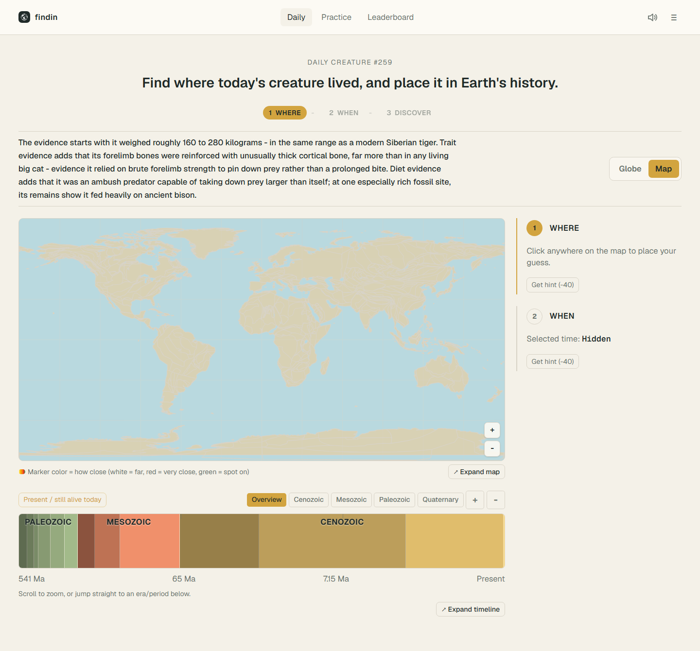

Findin
A WHERE and WHEN guessing game for living and extinct animals, built around reproducible daily puzzles and cautious scientific content handling.

80published/playable content rows
578total content candidates staged
328passing tests, 53 test files
System Summary
Provider sources
GBIF, PBDB, GPlates
GBIF, PBDB, GPlates
→
Offline ingestion
+ quality gates
+ quality gates
→
Supabase catalog
Browser (Daily / Practice)
↔
Server-authoritative routes
↔
Frozen Daily snapshot
Key Engineering Decisions
- Persist a Daily puzzle row with a frozen animal snapshot, so a player never sees the answer move underneath them.
- Run ingestion, rescue, and validation offline so gameplay never depends on live provider calls.
- Cache GPlates-derived coastlines and fossil coordinates ahead of time, with fallback to the modern map for unsupported ages.
- Apply a hard no-repeat Daily rotation before scoring the remaining candidates for balance.
Data + Quality
- Provider evidence is normalized and gated through explicit content states before it can become playable.
- Quality gates cover taxonomy, WHERE, WHEN, paleo support, media, and Field Notes.
Limitations
- Live and playable, but not presented as a launch with proven traction.
- Of 578 staged candidates, 80 are published/playable; the Daily-ready pool is smaller still.
- The globe view is experimental; the map/timeline flow is the production-safe claim.
What It Demonstrates
Turning messy scientific data into something that has to be right — offline ingestion and validation, server-authoritative game state, and being explicit about which surfaces are production-safe versus experimental.